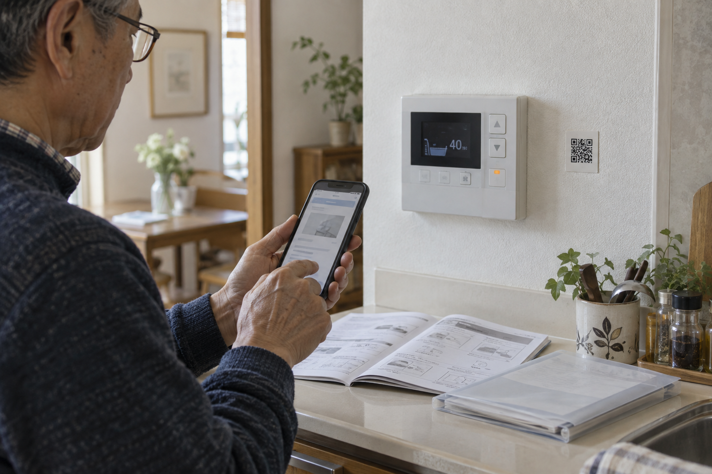

私がかつて住宅の仕事をしていた頃、引き渡しの時に、住まいの書類や履歴を残せる立派な箱をお渡ししていました。皆さんの家にも、説明書や保証書をまとめてもらった箱やファイルがありませんか。そのまま、棚の奥で眠っていないでしょうか。
例えば、給湯器の取扱説明書を開けるQRコードを、リモコンの近くに置いておく。必要な時に家族が同じ資料を開けるようにする方法です。紙を残すだけでなく、「必要な時に見つかる」状態にする。その工夫を、修繕履歴やAIの使い方まで広げてみます。
引き渡し時の説明書・保証書・修繕記録を探して整理。給湯器などの取扱説明書をQRコードで開く工夫や、AIで必要な資料を探す方法を紹介します。
公開予定日：2026年11月26日
住宅履歴・QR・AI 文｜エイスケ（住宅と教育の専門家）
文｜エイスケ（住宅と教育の専門家）
私がかつて住宅の仕事をしていた頃、引き渡しの時に、住まいの書類や履歴を残せる立派な箱をお渡ししていました。皆さんの家にも、説明書や保証書をまとめてもらった箱やファイルがありませんか。そのまま、棚の奥で眠っていないでしょうか。
例えば、給湯器の取扱説明書を開けるQRコードを、リモコンの近くに置いておく。必要な時に家族が同じ資料を開けるようにする方法です。紙を残すだけでなく、「必要な時に見つかる」状態にする。その工夫を、修繕履歴やAIの使い方まで広げてみます。
車の整備記録を引き継ぐように、住宅も図面や点検・修繕の記録を残していく。それが「いえかるて」と呼ばれる住宅履歴情報の考え方です。
「外壁を直したのはいつ？」「給湯器は誰に頼んだ？」。日付、工事範囲、施工店が分かると、次の相談が進みます。住まいを家族へ引き継ぐときにも役立つ記録です。
紙のファイル、電子の取扱説明書、施工会社の履歴管理。どの方法を使っていても、まずは自宅の資料がどこにあるか確認してみましょう。
住宅履歴情報整備検討委員会が取りまとめた「住宅履歴情報の蓄積・活用の指針」は、国土交通省のサイトで公開されています。何を点検するかは第22回、ここでは結果をどう残し、次の手入れへ引き継ぐかを扱います。
引き渡し時の箱やファイルを開き、今ある資料を次の五つに分けて探してみましょう。見つかった資料の保管場所を一覧にしておくと、家族もたどれます。
| 項目 | 具体的に入れるもの |
|---|---|
| 家の基本情報 | 図面、引渡日、構造、施工会社、管理規約など |
| 設備の情報 | 型番の写真、取扱説明書、設置日、保証書 |
| 点検・修繕履歴 | 日付、場所、症状、工事内容、費用、施工前後の写真 |
| 普段の使い方 | 取説に沿う掃除や点検、家族が迷いやすい操作 |
| 相談先 | 施工店・メーカー・管理窓口、保証の確認先 |
図面や保証書は原本をまとめ、修理の領収書や施工前後の写真があれば一緒に入れます。普段の使い方はメーカーの取扱説明書を参照し、家族が迷う操作には該当ページをメモする程度で十分です。
足りない資料は型番をもとにメーカーへ、工事の記録は施工店へ問い合わせます。これから修理をした時は、「年月／給湯器交換／施工店名・連絡先／型番／見積書・保証書・写真の保存場所」のように一行足していきましょう。交換前の資料は分けて残すと、今の機器の説明書を探しやすくなります。
私自身は、住宅設備や家電の説明書と保証書を、一つずつクリアポケットへ入れています。「浴室」「給湯器」「洗濯機」と見出しを付ければ、家族も探しやすくなります。感熱紙のレシートは文字が薄れる前に撮影しておくと便利です。
写真は、型番や日付、保証条件が読める状態で保存します。冊子が厚ければ、メーカーの公式サイトで型番に合うPDFを探す方法もあります。契約書や保証書などの原本は保管しておきましょう。
データも「給湯器_型番_設置年」「外壁_点検_年月日」とそろえると見つけやすくなります。図面や住所、契約情報を含むフォルダは、必要な家族だけが見られる設定にします。
給湯器のリモコンにエラーが表示されたら、近くのQRをスマホで読み取る。型番に合う公式の取扱説明書が開けば、棚から冊子を探す手間が減ります。まずは一台分から、次の順番で用意してみてください。
施工店の連絡先や保証書もまとめたい場合は、家族だけが見られる共有ページを作り、そのページにつなぐ方法もあります。
QRシールは、操作部や型番表示、通気口をふさがず、熱や水の影響を受けにくい場所に貼ります。設備を交換したら、QRのリンク先も新しい取扱説明書に更新しましょう。
QRコードは株式会社デンソーウェーブの登録商標です。
AIを使ってトラブルの対処方法を探すこともできます。具体的には、説明書が厚くて必要なページが見つからない時や、複数の修理記録から施工店を探したい時に、手元の資料の中から該当箇所を探す補助として使う方法です。見つけた原文を読み、メーカーや施工店へ相談する準備に役立てます。
まずは、一台分の取扱説明書のPDFと、その機器の修理記録を用意します。不要な個人情報を除き、保存・共有の設定を確認してから、ファイルを添付できるAIに読み込ませましょう。
AIへの入力例：「この取扱説明書から、型番○○のエラー△△について書かれた箇所を探してください。説明とページ番号、資料に載っている問い合わせ先を教えてください。資料にないことは不明と答えてください。」
答えが返ってきたら、示されたページを開き、型番やエラーの説明、電話番号を確かめます。修理記録を添付していれば、「最後に交換した日と施工店を探して」と聞く使い方もできます。次回も資料を使えるか、保存期間や会話を引き継ぐ方法をサービスの設定で確認しておきましょう。
異臭や煙などがある時は、まず使用を中止し、取説の安全案内に沿って窓口へ相談します。AIは資料を探す役として使い、故障の診断や修理は専門業者に任せましょう。
引き渡しの時にお渡しした箱が、年月を経て、その家だけの記録になっていく。住宅の仕事をしていた立場からも、そんな使われ方をしていたらうれしく思います。
修理をした日に一行足し、家族が同じ資料を開けるようにする。次に困った人が探し回らずに済むことが、記録を残す価値だと思っています。
契約書や保証書などの原本は保管し、写真やPDFは探しやすくする補助として使います。
型番に合う公式取説や、家族限定の情報ページへつなぎ、実際に開けるか確認します。
登録した取説や工事記録から、メーカーや施工店の連絡先を探してもらえます。見つかった資料を開き、電話番号と現在の窓口を確認しましょう。
型番をもとに公式サイトで取説を探し直します。手元にもPDFを保存し、リンクと連絡先を年に一度、設備を交換した時にも点検しておくと備えになります。
この記事を書いた人｜エイスケ
1986年生まれ。実家の工務店・不動産に10年間従事したのち、教育の世界へ。住宅と教育、両方の視点から「豊かな暮らし」をテーマに執筆します。